Intervals
Table of Contents
How To Work Out Intervals
Work Out a Note from an Interval
- If it's a major or minor interval, and it's not a second, take the scale and look for the scale degree mentioned. For example, a minor 6th from F:
- It's a major/minor interval, and isn't a second
- It's a minor interval. So build an F minor scale: F G A♭ B♭ C D♭ E♭ (F).
- And then look at the 6th scale degree. F G A♭ B♭ C D♭, and we've reached the 6th.
- Therefore, a minor 6th up from F is D♭.
- If it's a perfect interval, you can use either scale and look at the degree mentioned. For example, a perfect 4th from B♭:
- It's a perfect interval, so either scale can be used.
- Let's go for a major scale. B♭ C D E♭ F G A (B♭)
- And then look at the 4th scale degree. B♭ C D E♭, and we've reached the 4th.
- Therefore, a perfect 4th up from B♭ is E♭.
- If it's a major or minor second, then you need to apply a different method:
- If it's a major second, go up a whole step.
- If it's a minor second, go up a half step.
Work Out an Interval from a Note
For example, work out the interval between B and A. Here, I start with the major scale, but you can also start with the minor.
- Take the original note and build a major scale off of it. So, B C♯ D♯ E F♯ G♯ A♯ (B).
- Look for the other note and see whether it's in the scale. If it isn't, then use the minor scale. In this case, A isn't there, only A♯. So let's built the minor scale from B: B C♯ D E F♯ G A (B).
- Now, look at which scale degree it lands on. Here, A is the on the 7th position.
- Then, take the name of the scale and the scale degree, and combine them; in this case it would be a minor 7th.
Table of Intervals
To quickly look over the intervals and how they sound like, see this table:
| Interval Name | Alternate Name | No. of Semitones | Interval From C4 | Play Interval |
|---|---|---|---|---|
| Perfect Unison | Diminished Second | 0 | 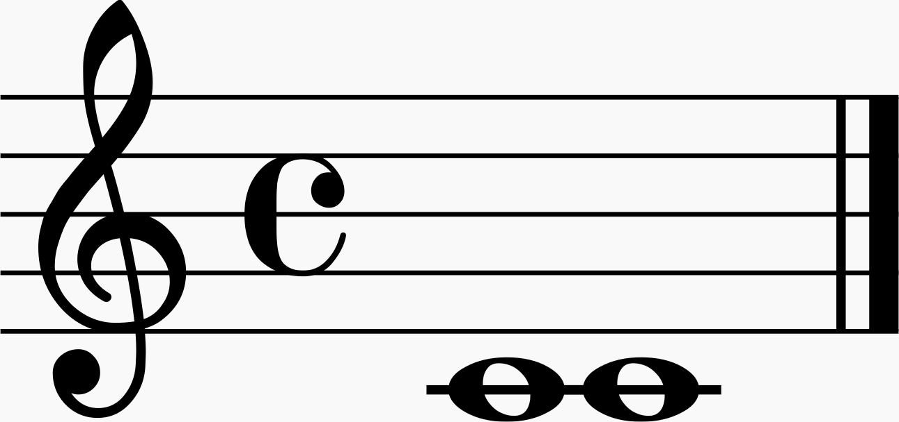 | |
| Minor Second | Augmented Unison | 1 | 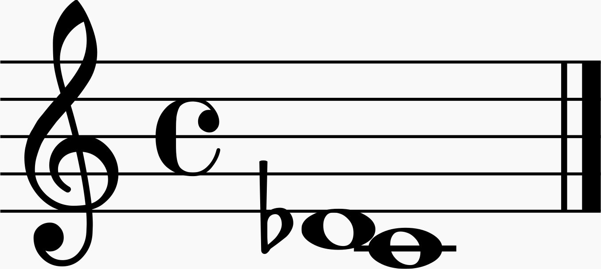 | |
| Major Second | Diminished Third | 2 | 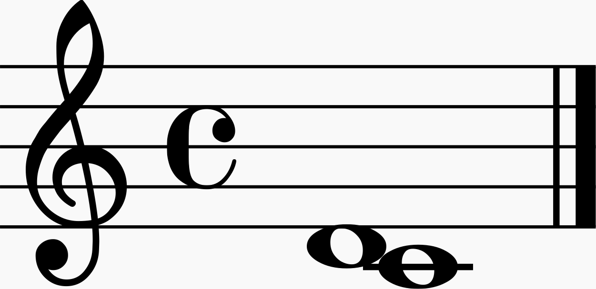 | |
| Minor Third | Augmented Second | 3 | 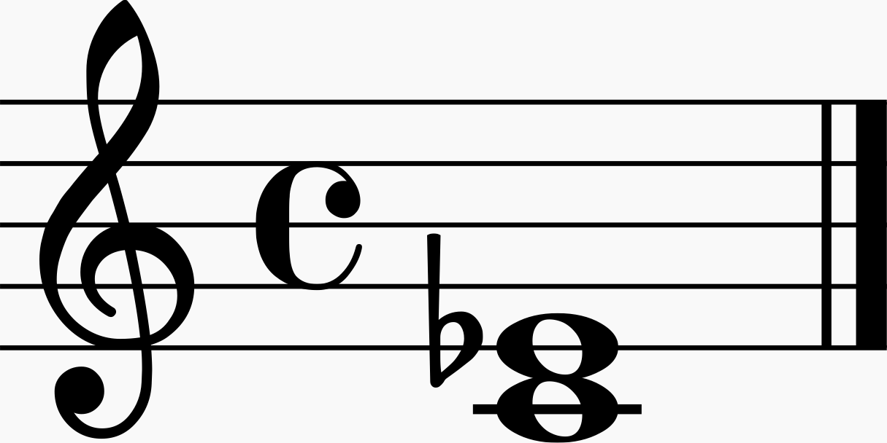 | |
| Major Third | Diminished Fourth | 4 | 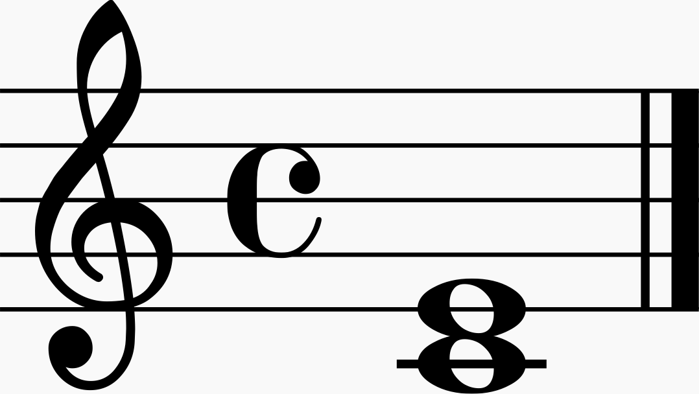 | |
| Perfect Fourth | Augmented Third | 5 | 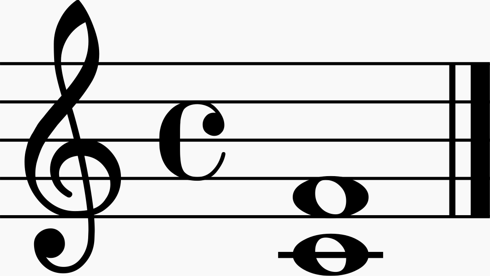 | |
| Tritone | Augmented Fourth / Diminished Fifth | 6 | 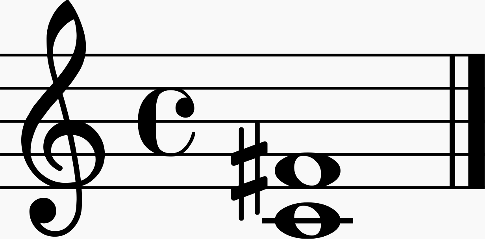 | |
| Perfect Fifth | Diminished Sixth | 7 | 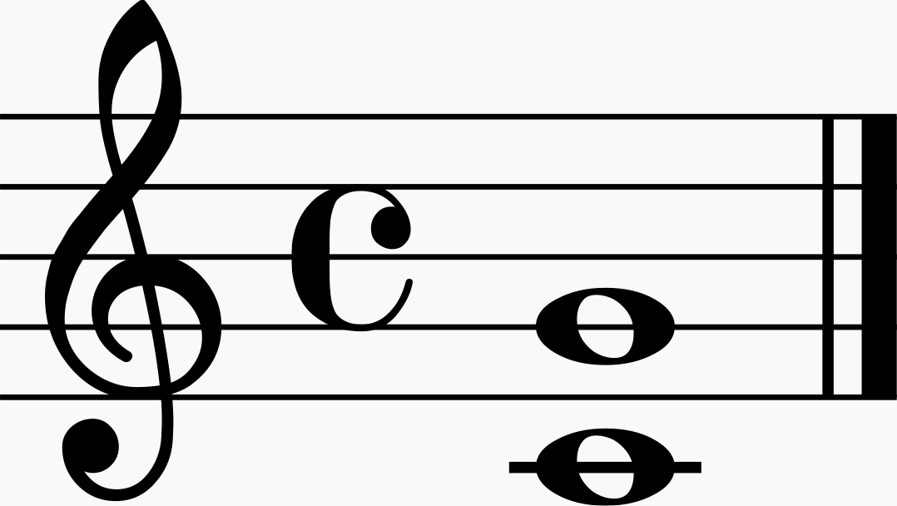 | |
| Minor Sixth | Augmented Fifth | 8 | 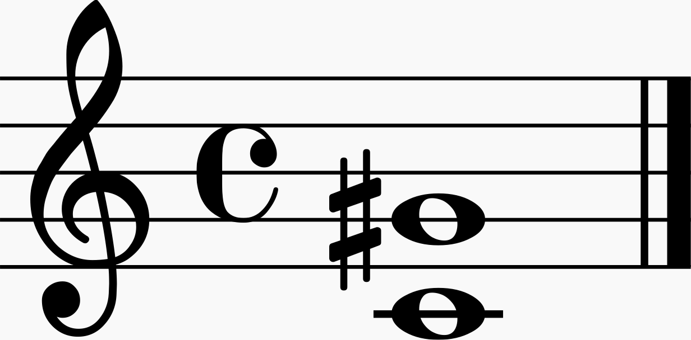 | |
| Major Sixth | Diminished Seventh | 9 | 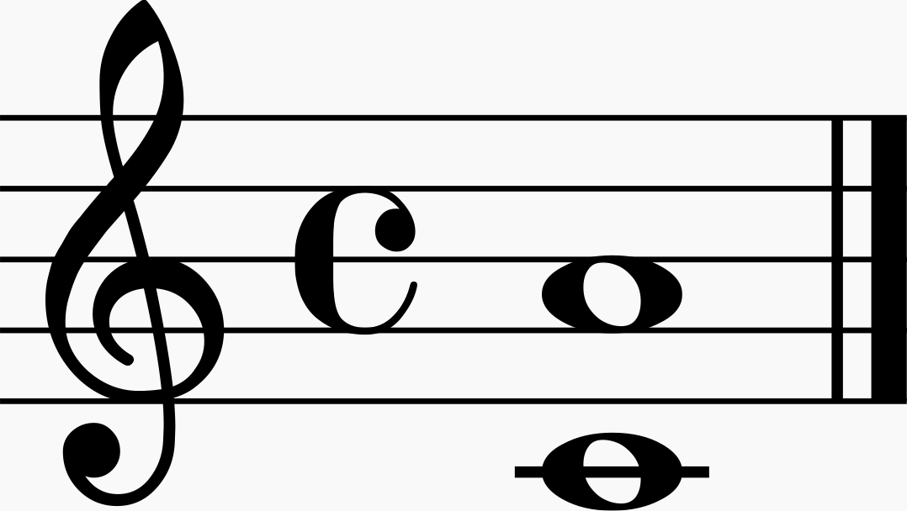 | |
| Minor Seventh | Augmented Sixth | 10 | 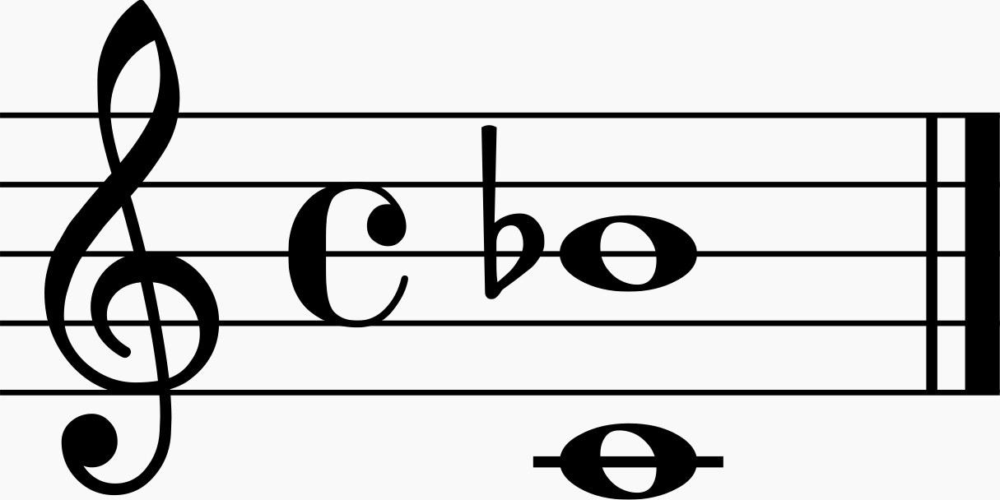 | |
| Major Seventh | Diminished Octave | 11 | 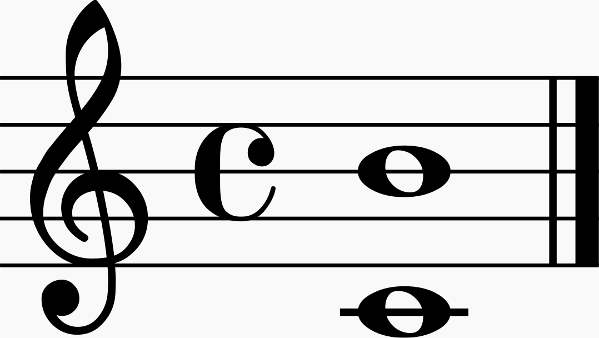 | |
| Perfect Octave | Augmented Seventh | 12 | 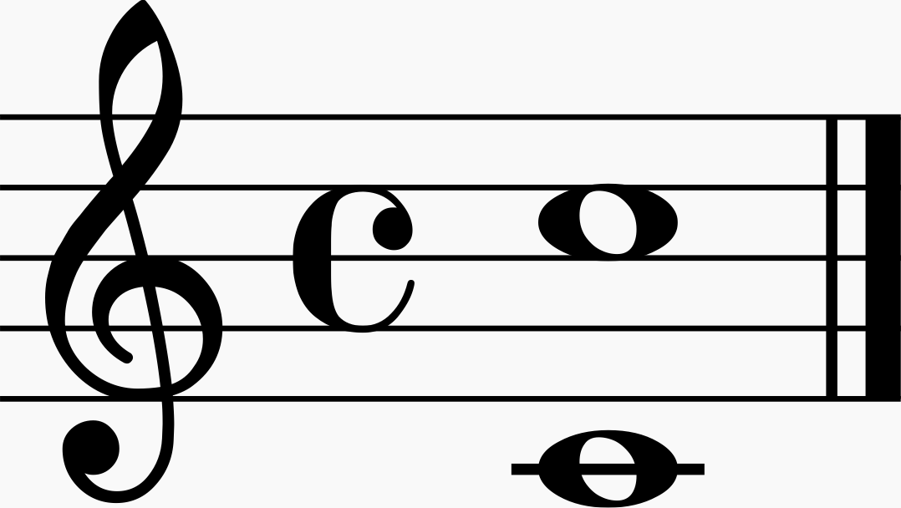 |